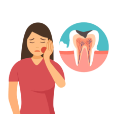

Headache
For headache relief in Pakistan, common over-the-counter options include paracetamol
or ibuprofen. Consultation with a healthcare professional is advised for persistent or severe
headaches..
Teeth Pain
Paracetamol can provide temporary relief. However, consulting a dentist is crucial for proper diagnosis
and treatment.

Body Pain
Paracetamol, ibuprofen, and diclofenac, naproxen is another effective over-the-counter option for body
pain relief in Pakistan.
High Fever
For high fever relief in Pakistan, paracetamol (acetaminophen) is a commonly used over-the-counter
medication. Consult a healthcare professional for appropriate dosing and guidance, especially if the
fever persists or worsens.

Shoulder Pain
For shoulder pain relief, you can try over-the-counter pain relievers like ibuprofen or diclofenac.
Applying ice and gentle stretching may also help. Consult a healthcare professional if pain persists.

Neck Pain
For neck pain relief, over-the-counter pain relievers like ibuprofen or paracetamol can be helpful.
Applying heat, gentle stretches, and maintaining good posture may also alleviate discomfort. Consult a
healthcare professional if pain persists.

Leg Pain
For leg pain relief, over-the-counter pain relievers like ibuprofen or paracetamol can offer relief.
Elevating the leg, gentle stretching, and applying warm compresses might also help. Consult a healthcare
professional if pain continues.

Stomach
For stomach pain relief, antacids like ranitidine or omeprazole can help with mild discomfort. However,
severe or persistent pain requires medical attention to determine the underlying cause.

Chest
For chest infections, it's essential to consult a doctor. They may prescribe antibiotics if it's a
bacterial infection. Over-the-counter cough medicines and staying hydrated can also provide relief.
Flu
For flu relief, rest, hydration, and over-the-counter medications like acetaminophen or ibuprofen can
help manage symptoms. Consult a doctor if symptoms worsen or persist.
Blood Pressure
For managing blood pressure, lifestyle changes like a balanced diet, exercise, and reducing salt intake
are important. Consult a doctor for personalized advice and, if needed, prescribed medications.

Skin
For skin infections, over-the-counter antibiotic ointments like Neosporin can help with minor wounds.
However, consult a healthcare professional for proper assessment and treatment, especially for more
severe infections.
.png)